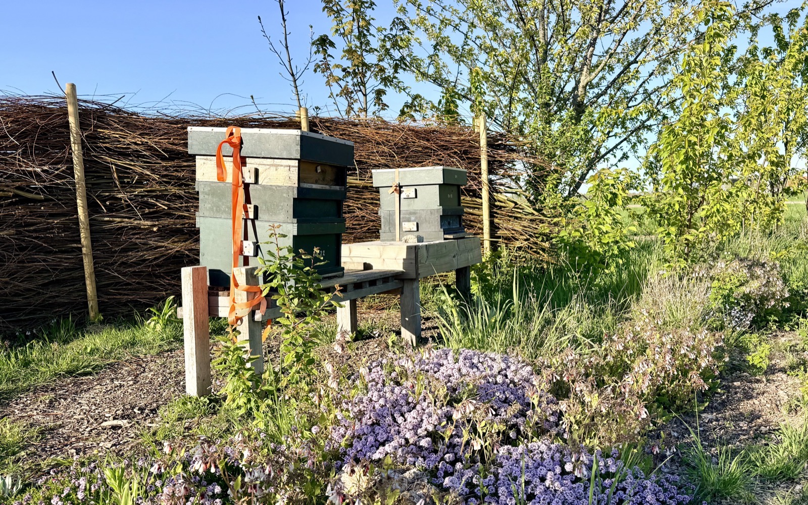
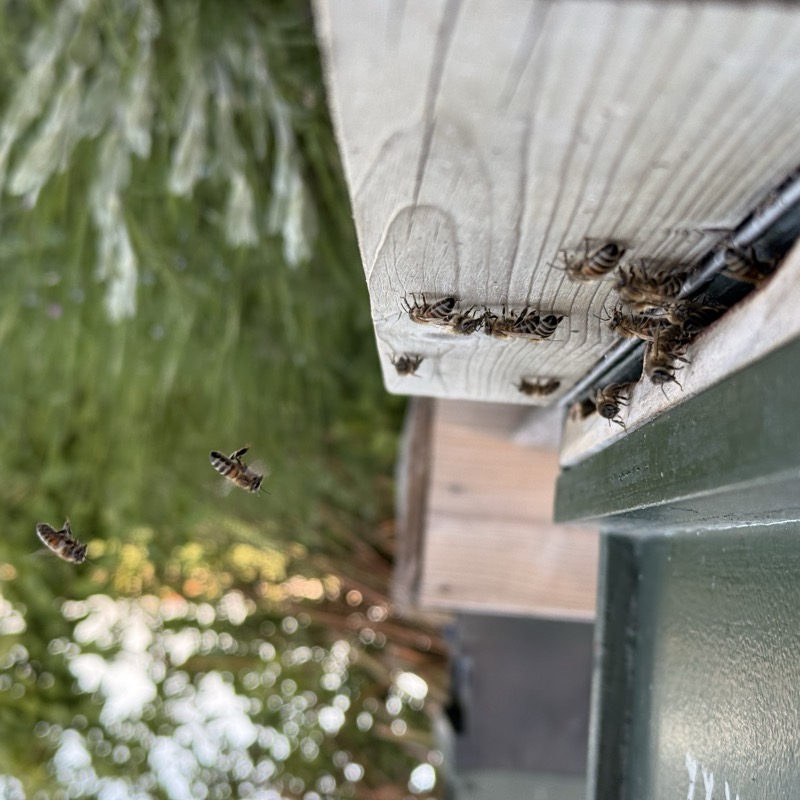
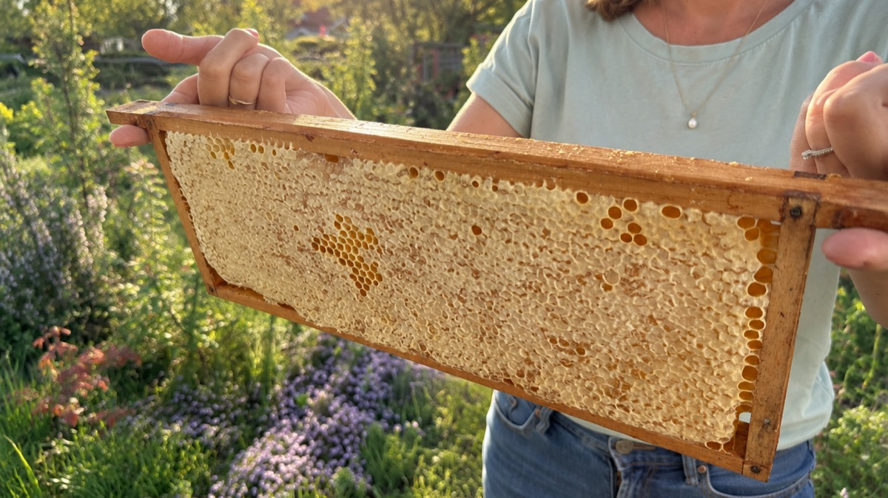
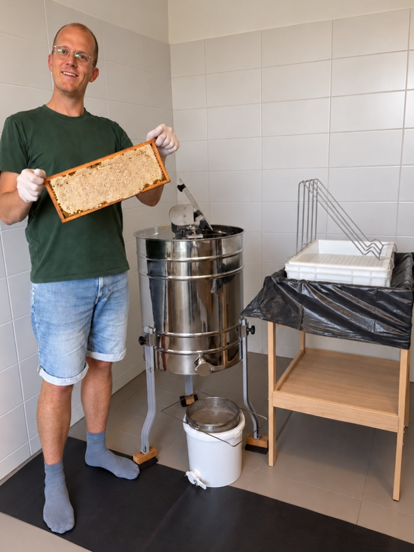

Goereese HONING

Ambachtelijke en pure honing uit Goedereede

Foto 2 — raat met verse honing
Video 1 — raat lichten

Foto 4 — bloesem
Foto 5 — slingeren
Foto 6 — potjes vullen


Foto 8 — de oogst van dit jaar